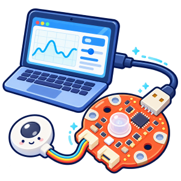

タコラッチ／タコラッチ・ミニ用 Webアプリ作成支援
アプリエ for AkaDako
AIとの対話を通して、AkaDakoシリーズ用の「こんなアプリを作りたい」というアイデアを形にする学習・開発支援ツールです。機種に応じた仕様づくりから作成、トラブル解決、仕組みの理解までを順番にサポートします。

タコラッチ／タコラッチ・ミニ用 Webアプリ作成支援
AIとの対話を通して、AkaDakoシリーズ用の「こんなアプリを作りたい」というアイデアを形にする学習・開発支援ツールです。機種に応じた仕様づくりから作成、トラブル解決、仕組みの理解までを順番にサポートします。